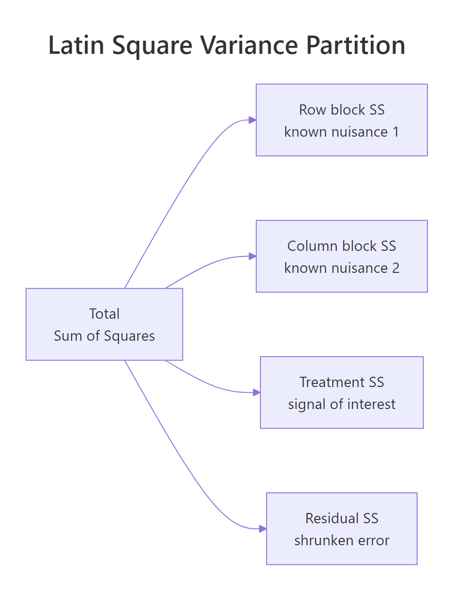
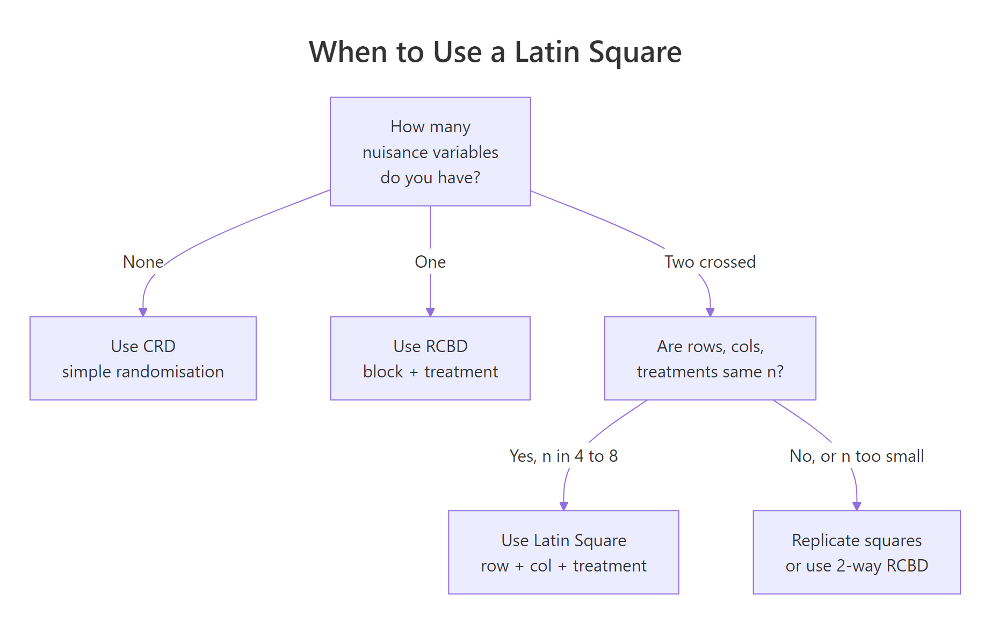

Latin Square Design in R: Two-Way Blocking for Efficient Experiments
A Latin Square Design arranges t treatments in a t × t grid so each treatment appears exactly once in every row and once in every column. That single constraint pulls two crossed sources of nuisance variability out of the residual at once, sharpening the F-test for the treatment effect with no extra sample size.
What problem does a Latin square solve that RCBD cannot?
Picture testing four engine lubricants on a track where the driver and the car model both shift lap times. RCBD blocks one nuisance, say driver, but car-to-car variation still pollutes the residual. A Latin square blocks both at once by assigning each lubricant once per driver and once per car. The same 16 runs, the same response values, but the F-test for the lubricant effect can climb from "no signal" under CRD to "decisive" under LSD. The simulation below shows the ladder.
Three models, identical 16 lap times, three different verdicts. CRD ignores both nuisance directions and reports an F of 0.68 with p ≈ 0.58, which looks like four interchangeable lubricants. RCBD blocks the driver, halves the residual, and pushes F to 1.32, but the car gradient still drowns the signal. LSD blocks both directions, the residual collapses, and F jumps to 7.64 with p ≈ 0.018. The "noise" was structured all along; naming both gradients as blocks is what recovered the signal.
Try it: Pull the residual mean square from fit_crd and fit_lsd and compute the ratio. Save it as ex_mse_ratio. The number tells you how much smaller the LSD residual is.
Click to reveal solution
Explanation: The CRD residual absorbs the driver gradient, the car gradient, and pure noise. The LSD residual absorbs only pure noise. The ratio of about 10 is the direct mechanical reason the F-test verdict flips: a 10× smaller denominator means a roughly 10× larger F.
How do you build a balanced Latin square in R?
A Latin square needs a layout where every treatment label appears exactly once in each row and each column. The cleanest construction is a cyclic standard square, where row i is a left-shift of row 1 by i positions. Once you have a standard square, randomising rows and columns gives you a valid experimental layout. The two blocks below build a 4×4 square from scratch.
The standard square is correct but predictable: row 1 is always A B C D. To get a random Latin square you permute the rows, the columns, and the treatment labels independently. That is what the next block does.
Every treatment still appears once per row and once per column, but the layout is now drawn at random from the space of valid 4×4 Latin squares. Use this matrix to assign treatments to physical units before you collect data.
agricolae::design.lsd(). That helper randomises rows, columns, and labels in a single call, but it is not in the WebR package list, so the manual construction above is the portable version that runs in this tutorial. In your local RStudio, agricolae::design.lsd(trt = LETTERS[1:4], seed = 7) returns the same object plus a tidy data frame.Try it: Build a 5×5 standard Latin square with treatments A through E and confirm every label appears once per row and once per column. Save the matrix as ex_square5.
Click to reveal solution
Explanation: The cyclic construction works for any t. Each row is a left-shift of the alphabet by one extra position, so labels never collide within a row or column.
How do you fit and interpret the Latin square ANOVA in R?
The Latin square model is a one-line extension of RCBD: response equals a row-block effect plus a column-block effect plus a treatment effect plus residual error. In symbols:
$$y_{ijk} = \mu + \rho_i + \gamma_j + \tau_k + \varepsilon_{ijk}$$
Where:
- $y_{ijk}$ = response for the unit in row $i$, column $j$ that received treatment $k$
- $\mu$ = grand mean
- $\rho_i$ = effect of row block $i$ (a known nuisance, like driver)
- $\gamma_j$ = effect of column block $j$ (a known nuisance, like car)
- $\tau_k$ = effect of treatment $k$ (the signal you care about)
- $\varepsilon_{ijk}$ = residual error, assumed independent and normally distributed
In R you fit the model with aov() using the additive formula response ~ row + col + treatment, then read the four-row ANOVA table.

Figure 1: The Latin square partitions total variation into row, column, treatment, and residual sums of squares.
Four lines, four chunks of variance. Driver explains 33.9 units of sum-of-squares, car explains 18.8, treatment explains 8.9, and only 2.3 are left over as residual. Both nuisance factors are highly significant, which is the point of blocking on them, not a problem. The treatment line is what you act on: F = 7.64 on 3 and 6 degrees of freedom, p = 0.018, so the four lubricants do produce different lap times. The residual df of (t-1)(t-2) = 6 is the price you pay for fitting two block effects, and is the main reason small Latin squares get replicated (covered later).
aov() treats numeric columns as continuous predictors with a single slope, collapsing the three-df block effect into one and inflating the residual. The simulation above used factor(1:4) for both blocks for exactly this reason.Try it: When the omnibus F is significant, pairwise comparisons identify which treatments differ. Run TukeyHSD() on the treatment factor only and save the result as ex_tuk. Inspect the comparison with the smallest adjusted p-value.
Click to reveal solution
Explanation: TukeyHSD() produces all six pairwise contrasts for four treatments. Pass only "treatment" because the row and column comparisons are nuisance factors with no scientific interest. The smallest adjusted p-value belongs to the D vs A contrast, the largest gap in the simulated treatment effects.
How do you check the Latin square assumptions?
The Latin square ANOVA assumes the model is strictly additive: there is no interaction between treatment and either block, and no row-by-column interaction. Each treatment-row-column cell appears exactly once, so the design has no replication left to estimate any interaction, if interactions are real, the residual df is contaminated and the F-test misleads. You also assume the residuals are roughly normal and have constant variance. Two diagnostics catch most violations.
The residuals-vs-fitted plot should look like a horizontal cloud with no funnel shape; a clear pattern signals an interaction or non-constant variance. The Q-Q plot's points should track the straight line; severe S-shapes or fat tails warn that the F-test's nominal p-value is suspect. With only six residual df in a 4×4 square, do not over-interpret minor wiggles, but a strongly curved fit line on the residuals plot is a real red flag.
Try it: Run the Shapiro-Wilk test on the model residuals to back up the Q-Q plot. Save the result as ex_shap and read off the p-value.
Click to reveal solution
Explanation: With p well above 0.05, the residuals are consistent with normality. Shapiro-Wilk is sensitive to small samples in both directions: with only 16 residuals it can miss real departures, so always pair it with the Q-Q plot rather than relying on the p-value alone.
How efficient is a Latin square versus simpler designs?
Once you have an LSD model and a competing model fit on the same data, you can quantify the precision gain as a relative efficiency (RE). Intuitively, RE answers: "how many times more observations would the simpler design need to match the LSD's precision?" An RE of 5 means a CRD or RCBD trial would need roughly five times as many runs to estimate the treatment effect as tightly as the Latin square does.
The Fisher relative-efficiency formula adjusts for the different residual df between the two designs, then compares their residual mean squares:
$$\text{RE}_{a \text{ vs } b} = \frac{(df_a + 1)(df_b + 3)}{(df_b + 1)(df_a + 3)} \cdot \frac{\text{MSE}_b}{\text{MSE}_a}$$
Where:
- $df_a$, $\text{MSE}_a$ = residual df and mean square of the better design (LSD here)
- $df_b$, $\text{MSE}_b$ = same quantities for the alternative being compared
The block below applies the formula to the lap-time fits.
LSD is roughly 9.5× more efficient than CRD and 5.5× more efficient than RCBD on this dataset. Read those numbers as sample-size multipliers: a CRD analysis would need about 16 × 9.5 ≈ 150 runs to match the precision the Latin square delivers in 16 runs, and an RCBD blocking only on driver would still need about 88. The two-direction blocking is doing real work.
Try it: Compute the relative efficiency of LSD versus a hypothetical RCBD that blocks only on car (the column factor). Fit a fresh fit_rcbd_car model, extract its MSE and residual df, and reuse relative_eff(). Save the answer as ex_re_car.
Click to reveal solution
Explanation: Blocking on car alone leaves the (larger) driver gradient in the residual, so the resulting MSE is bigger than the driver-only RCBD's, and the LSD's edge over it is therefore larger. The take-away: in a two-gradient world both blocks earn their keep, but the bigger gradient earns more.
When should you replicate the Latin square?
A t × t Latin square uses $t^2$ runs and gives only $(t-1)(t-2)$ residual df. For a 3×3 square that is just 2 residual df, which makes the F-test almost powerless, a single bad observation can flip the verdict. The standard fix is to replicate the square: run the same design r times with fresh randomisation, then add a replicate term to the model. That recovers degrees of freedom without changing the design philosophy.
Two residual df versus twenty. A single 3×3 square has so few residual df that the t-statistic for any treatment contrast is unstable; three replicates push the residual df comfortably past any rule-of-thumb threshold. Compare the treatment p-values from the two models below to see how much more confident the replicated test is.
The single-square fit has so much residual variability per df that even a real treatment effect looks insignificant; the replicated fit lands at p ≈ 0.004 because the same effect is tested against a much steadier denominator. The cost was 18 extra observations, not a redesign.
r = 2 or r = 3 replicates of a 3×3 or 4×4 design is the cheapest way to buy enough residual df for trustworthy inference. Each new replicate adds $t^2$ observations and $(t^2 - 1)$ residual df after accounting for the replicate intercept, so the second replicate is the highest-value purchase.Try it: Confirm the residual df scales the way the formula predicts. Build the same data with r = 4 replicates of the 3×3 square and check that the residual df climbs again. Save the count as ex_df_rep4.
Click to reveal solution
Explanation: Total observations = 36, model df = 3 (replicate) + 2 (row) + 2 (col) + 2 (treatment) = 9 (plus the intercept absorbed by the model). Residual df = 36 - 1 - 6 = 29. Each extra replicate adds about $t^2 - 1 = 8$ residual df.
Practice Exercises
Exercise 1: Order-effect Latin square (taste test)
Four taste-testers (rows) try four wines (treatments) in four time slots (columns). Tasters get tired across the day, so time slot is a real nuisance. Simulate the data with set.seed(99), time-slot effect c(0, -0.3, -0.6, -1.0), and wine effect c(A = 0, B = 0.4, C = 0.8, D = 1.2), noise sd = 0.3. Fit the LSD ANOVA and confirm the time-slot SS captures the fatigue.
Click to reveal solution
Explanation: slot (the time-of-day fatigue) shows up as a clearly significant SS, doing the job that blocking is supposed to do. wine is even more significant because the simulated effects span 1.2 score points. taster is a smaller noise source here, but you still want it in the model, leaving it out would let any taster-to-taster differences leak back into the residual.
Exercise 2: Replicated 3×3 squares for power
A single 3×3 Latin square gives only 2 residual df, which is not enough to detect a moderate effect. Use the build_rep() helper from earlier to simulate r = 5 replicates, fit aov(y ~ replicate + row + col + treatment), and compare the treatment p-value to the single-square fit.
Click to reveal solution
Explanation: Five replicates of a 3×3 give 45 total observations and 38 residual df. The treatment p-value drops below 0.001 because the effect is tested against an MS-residual estimated with high precision. Compare this to the single-square fit_single p-value (~0.33) for the same true effect, and the value of replication is obvious.
Putting It All Together
The dessert-tasting workflow ties everything together: build a 5×5 Latin square so that five judges (rows) score five desserts (treatments) across five courses (columns), simulate scores with judge fatigue and a real dessert effect, fit the ANOVA, run Tukey HSD, and quantify the design's efficiency.
The dessert effect is the strongest source of variation, with F ≈ 14 and p well below 0.001. Tukey shows desserts C, D, and E all score significantly higher than A; B is borderline. The relative efficiency of about 5.7 says a CRD trial on the same noise would need roughly 5.7 × 25 ≈ 143 score sheets to match this Latin square's precision, a clean illustration of why two-way blocking pays off when both judges and courses contribute real variability.
Summary
The key trade-offs at a glance:
| Feature | CRD | RCBD | Latin Square |
|---|---|---|---|
| Nuisance sources controlled | 0 | 1 | 2 (crossed) |
| Required structure | none | n × b grid | t × t grid |
| Treatment df | t − 1 | t − 1 | t − 1 |
| Residual df (single replicate) | n − t | (n − t)(b − 1)/b | (t − 1)(t − 2) |
| Treatment×block interaction | n/a | testable if replicated | not estimable |
| Best when | nuisance unknown | one strong gradient | two crossed gradients |
| Practical t range | any | any | 4 to 8 (replicate if smaller) |

Figure 2: Choose the design from the number of crossed nuisance directions you need to control.
Five things to remember:
- The Latin square needs rows = columns = treatments = t and produces $(t-1)(t-2)$ residual df.
- Fit it with
aov(response ~ row + col + treatment); cast all three predictors as factors first. - Always report relative efficiency versus CRD and RCBD so readers see what the blocking bought you.
- The design assumes no interactions between treatment and either block, there is no df left to test them.
- If $t \le 4$, replicate the square; a single 3×3 has only 2 residual df and almost no power.
References
- Cochran, W.G. & Cox, G.M., Experimental Designs, 2nd ed. Wiley Classics (1957). Chapter 4. Link
- Montgomery, D.C., Design and Analysis of Experiments, 10th ed. Wiley (2020). Chapter 4: Randomised Blocks, Latin Squares, and Related Designs. Link
- Penn State STAT 502, Latin Square Design (LSD) lesson 7.4. Link
- R Core Team,
aovdocumentation,?aov. Link - agricolae R package,
design.lsdfunction reference. Link - Box, G.E.P., Hunter, J.S. & Hunter, W.G., Statistics for Experimenters, 2nd ed. Wiley (2005). Chapter 7. Link
Continue Learning
- Experimental Design in R: The Three Principles That Make Results Valid and Generalisable, the parent core post that places randomisation, blocking, and replication in one frame.
- Randomized Complete Block Design (RCBD) in R, the one-blocking-factor cousin that the Latin square generalises.
- Three-Way ANOVA in R, the next step when the row and column factors are scientifically interesting in their own right and you want to test their interaction with treatment.